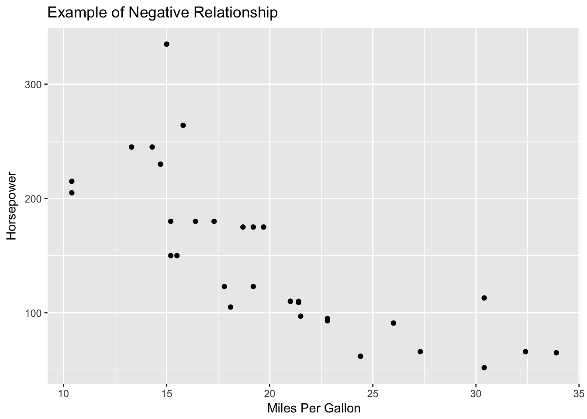

Chapter 9 Correlation
Statistical correlation simply refers to the notion that two variables are related to one another. The ideas is that when one varies, the other varies in a predictable manner. There are typically two ways to understand the nature of a correlation: * Visually
* Numerically
In order to get a better understanding about correlations, in this chapter we are going to learn how to calculate Pearson’s correlation coeffecient. After calculating Perason’s \(r\), we’ll then talk a bit more about the assumptions correlation, what factors can impact linear correlation, and how to test the “significance” of a correlation coeffecient. Lastly we will talk about other types of correlation coefficients that deal with ordinal variables, or those measured by ranks.
Many people have seen a scatterplot before like the one shown below.
library(ggplot2)
ggplot(iris, aes(x = Sepal.Length, y = Sepal.Width)) + geom_point() +
labs(title = "Example of a Scatterplot", x = "Sepal Length", y = "Sepal Width") On the horizontal axis (or x axis), one variable is plotted and then each corresponding score on the x axis is plotted against its respective value on the vertical axis (or y axis). The pattern that the variables show can indicate the nature of the relationship between the two variables. From the pattern above there appears to be a positive relationship between the length of an iris’s sepal and its width. The relationship is positive because one variable increases, so does the other. If the variables were to share a negative relationship we would see a trend where scores would move from the top left down until the bottom right like this plot below.
On the horizontal axis (or x axis), one variable is plotted and then each corresponding score on the x axis is plotted against its respective value on the vertical axis (or y axis). The pattern that the variables show can indicate the nature of the relationship between the two variables. From the pattern above there appears to be a positive relationship between the length of an iris’s sepal and its width. The relationship is positive because one variable increases, so does the other. If the variables were to share a negative relationship we would see a trend where scores would move from the top left down until the bottom right like this plot below.
ggplot(mtcars, aes(x = mpg , y = hp)) + geom_point() +
labs(title = "Example of Negative Relationship", x = "Miles Per Gallon", y = "Horsepower")
[EXAMPLES OF NO RELATIONSHIP, CURVILINEAR?]
We can describe both the strength and direction of each of these relationships by using Karl Pearson’s Pearson’s Product-Moment Correlation Coeffecient or \(r\). \(r\) has three main properties * \(r\) varies from -1 to 1 * The strength, or magnitude, of the relationship increases as distance from 0 increases. * The sign of the correlation represents the direction, or slope of the relationship.
In order to explore how \(r\) works, we are going to focus on an example where a graduate student samples 50 college professors in social sciences at the same university who have been there for at least 10 years. She measures them on a number of characteristics: average quality of their instruction, average quality of their courses, number of publications, and number of citations by other authors. She wants to know if there is there a relationship between the number of publications and number of citations?
Let’s enter our data in.
# Create Data
yearsTeaching <- c(0,14,1,1,11,3,16,1,13,1,0,7,49)
numberOfPublications <- c(0,90,2,32,53,12,108,4,82,19,0,51,274)
publicationData <- as.data.frame(cbind(yearsTeaching,numberOfPublications))
ggplot(publicationData, aes(x = yearsTeaching, y = numberOfPublications)) + geom_point() +
labs(main = "Publication Data", x = "Years Teaching", y = "Number of Publications")
Now on to the calculations!
9.1 Calculating Person’s r
Using the data from above, the first way we are going to calculate \(r\) is to use the cross products. The cross producets represent the multiplication of X and Y represented on standardized scores. We can use the following two formulas:
\[r_{xy} = \frac{\Sigma z_X z_Y}{N}\]
\[z = \frac{X = \mu}{\sigma}\]
Note these formulas (e.g., z-score) use population characteristics and that this approach is very tedious. It also does not make sense unless you already have the z-scores calculated for some reason.
Since we want to have a better idea of these formulas, let’s break it down. What we are solving for is \(r_{XY}\) which is Pearson’s \(r\). The little \(X\) and \(Y\) indicates that the \(r\) there is representing the relationship between those two variables. This might seem obvious, but once you start looking at bigger datasets where you have more than two varaiblse, this notation is nice to keep track of what each \(r\) represents.
Now the top part of our equation is \(\Sigma z_X z_Y\). The \(\Sigma\) means we need to perform a summation (add them all up!) the products of each set pair of \(z\) scores. So in order to do this, let’s first get the z scores from each of our variables.
zYearsTeaching <- scale(publicationData$yearsTeaching)
zYearsTeaching## [,1]
## [1,] -0.6720661
## [2,] 0.3733701
## [3,] -0.5973921
## [4,] -0.5973921
## [5,] 0.1493480
## [6,] -0.4480441
## [7,] 0.5227181
## [8,] -0.5973921
## [9,] 0.2986961
## [10,] -0.5973921
## [11,] -0.6720661
## [12,] -0.1493480
## [13,] 2.9869605
## attr(,"scaled:center")
## [1] 9
## attr(,"scaled:scale")
## [1] 13.39154zNoOfPublications <- scale(publicationData$numberOfPublications)
zNoOfPublications## [,1]
## [1,] -0.74362264
## [2,] 0.45312906
## [3,] -0.71702815
## [4,] -0.31811092
## [5,] -0.03886886
## [6,] -0.58405574
## [7,] 0.69247940
## [8,] -0.69043367
## [9,] 0.34675113
## [10,] -0.49097506
## [11,] -0.74362264
## [12,] -0.06546334
## [13,] 2.89982142
## attr(,"scaled:center")
## [1] 55.92308
## attr(,"scaled:scale")
## [1] 75.20357Now that we have the \(z\) scores of our data, we then need to multiply them by each other.
zCorrelationProductSummation <- sum(zYearsTeaching * zNoOfPublications)We’ve now done the top part of the equation. All that is left to do is now divide by number of observations we have. Note here that we could hardcode this is in knowing that we only have 13 observations, but if we were get to more data, we wouldn’t want to have to update that every time! In order to get around this problem, let’s make R count how many variables we have, then divide by that with the `nrow() function.
zCorrelationProductSummation / nrow(publicationData)## [1] 0.9142855And then we can then check that what we did is correct with R’s cor() function.
[Add in R correlation function?]
The \(r = .91\) in this example! We have a very strong positive correlation between years teaching and number of publications.
Of course we are not always going to want to convert our scores to z scores and calculate it. For that, you might want to use the actual raw scores in your calculation. The deviation score formula is a computational formula that relies on using deviations from respective means:
\[r_{XY} = \frac{\Sigma(X-\bar{X})(Y-\bar{Y})}{\sqrt\Sigma (X-\bar{X})^2\Sigma(Y-\bar{Y})^2} = \frac{\Sigma(X-\bar{X})(Y-\bar{Y})}{\sqrt{SS_{X}SS_{Y}}}\]
Or you could use the formula that uses the raw score, which bypasses the need to calculate the deviations from each mean:
\[r_{XY} = \frac{N\Sigma XY - \Sigma X \Sigma Y}{\sqrt{[ N \Sigma X^2 -(\Sigma X)^2] [N \Sigma Y^2 - (\Sigma Y)^2}] }\]
Finally, we can use the covarianceto compute the correlation.
Covariance is the average sum of the cross-products of deviations:
\(s_{XY} = \frac{\Sigma (X - \bar{X})(Y - \bar{Y})}{N - 1}\)
Dividing this number by the cross-product of the unbiased sample standard deviations produces:
\[r_{XY} = \frac{S_{XY}}{S_X S_y}\]
9.1.1 Assumptions
All correlations require a certain set of assumptions:
- The scores are pairs—the same set of individuals needs to contribute both scores.
- Because the mean and variance are used to compute r, the variables need to be measured on an interval or ratio scale.
- X and Y are normally distributed.
- The observations were randomly sampled. 5.The relationship between the variables is linear, rather than curvilinear. Values of rare uninterpretable (and are underestimates) for curvilinear relationships.
- If the range on one or both variables is restricted (i.e., the group is very homogeneous on X and/or Y), then the value of rtends to become smaller.
Theoretically, the correlation can get bigger with range restriction, although this is VERY rare with moderate-to-large sample sizes.
[DB LEFT OFF HERE]

Hicks
The sample size will not affect the value of r(except when N= 2), but will affect its accuracyin terms of statistical significance. -when N= 2, rALWAYS equals ±1.0 c.The coefficient of determinationrepresents the amount of variance in Ythat can be associated with the variance in X.

Hicks
Conceptual

Hicks
Finally, a measured correlation says nothing about whether Xand Yare causally linked, only that there is an association. There are three generic possible reasons for the association.

Hicks
Testing the “significance” of the correlation coefficient. a.Is the correlation different from 0?

Hicks
Or look up critical values in A5 and compare with r 48df .05 alpha of .273

Hicks

Hicks
There is a correlation coefficient to deal with ordinal variables, or those measured by ranks, called Spearman rho.

Hicks
d= the difference between paired ranks, rather than paired scores.

Hicks